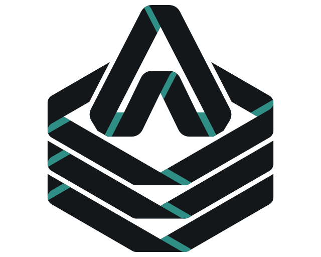

Annealage Mesh
~/cad/dual-pci/build
Pause
Model
Review
Timeline
Chat
A
S
F
build
3 parts
60,496
triangles
rebuilt
14:26
Z-up
Y-up
Previewing turn 2
before the brace move. Pins and callouts as they are now.
Back to now
1
A2
Selection
U3
RP2040
Zoom
Footprint
QFN-56-1EP_7x7mm_P0.4mm
Side
front
At
24.13, 19.05 mm, 0°
Nets
GND
,
+3V3
,
+1V1
and 41 more